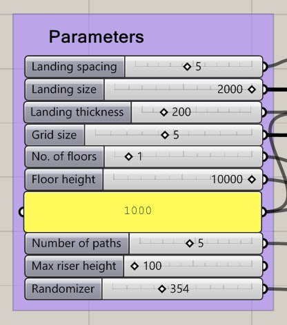
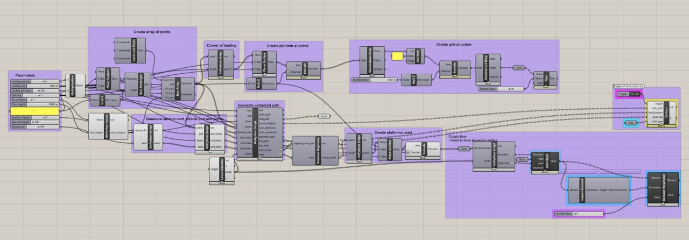
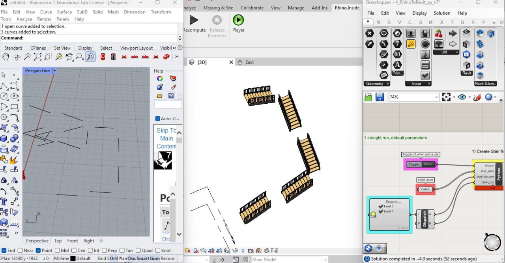
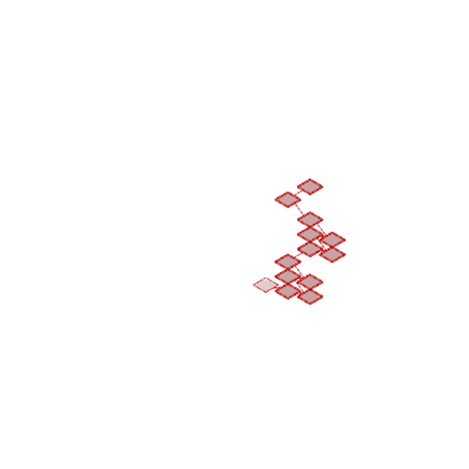

Escher Stairs
Brief
Inspired by MC Escher's "Relativity" (1953), this project produces a surreal network of floating stairways that challenges conventional ideas of movement, orientation, and spatial logic. The design reflects the fragmented nature of contemporary existence — where paths multiply, choices abound, and connections are both abundant and elusive. Each stair and platform represents a moment of decision, inviting users to navigate a landscape with no clear destination.
The entire Python script was written from scratch, driving the full pipeline from grid creation to pathfinding to automatic Revit element generation.
Process
The system takes in input parameters — grid size, number of levels, landing size, gap size, number of paths, and a randomiser seed. It first generates a 3D array of points to form the grid. Start, middle, and end points are randomly assigned across the first, middle, and top layers. A breadth-first search algorithm then computes the optimum path through the grid, outputting horizontal lines that define the stair routes.

Input parameters
Rhino to Revit
The script extracts level IDs from Revit and assigns them to each point along the generated path. Landing boundary curves and level IDs are fed into the landing generation script, automatically producing landings in Revit without manual placement. For the stairs, the script outputs three lists — stair paths, bottom levels, and top levels — which are fed into the stair generation script to automatically create all stair elements in Revit.

Grasshopper definition with Python components

Rhino.Inside — Grasshopper to Revit pipeline
Output
Each run of the randomiser produces a unique Escher-like stair composition. The robustness of the code allows it to handle a wide range of input parameters, automatically generating all paths, landings, and stair elements across multiple levels.

Parametric variations — different randomiser seeds